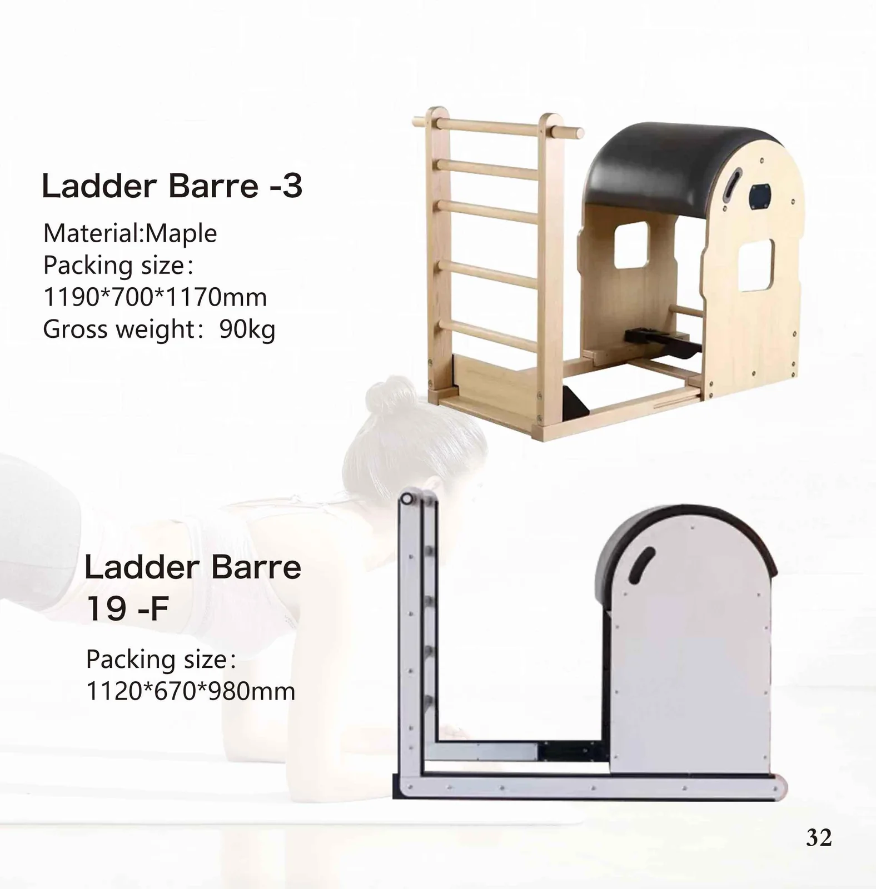
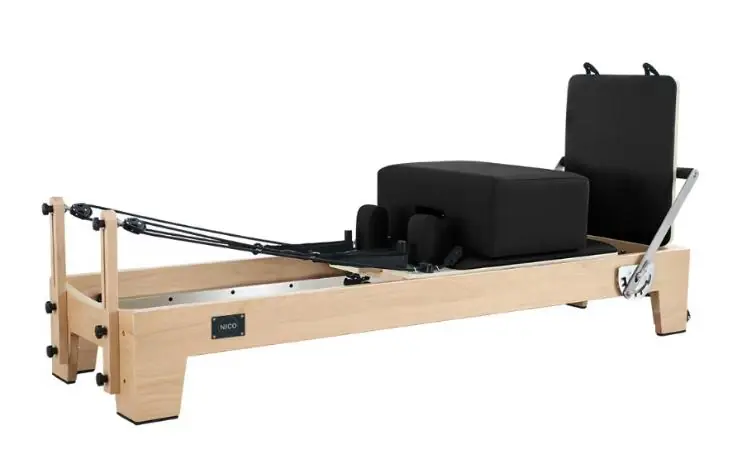

이 사이트의 모든 기기는 2026 카탈로그의 한 페이지입니다. 시리즈를 열면 카탈로그 페이지 자체가 나타나며, 그 아래에 동일한 사양이 텍스트로 정리되어 있습니다.

머시닝 가공 알루미늄 프레임과 스테인리스 스틸 레일 — 대량 주문과 스튜디오 인테리어 시공의 주력 라인입니다.

보관 시 납작하게 접혀 아파트 배송도 가능하며, 홈 스튜디오와 DTC 판매자들이 가장 먼저 찾는 라인입니다.

전통 조립 공법으로 제작한 메이플 및 오크 프레임으로, 원목 룩을 원하는 스튜디오를 위한 제품입니다.

타워, 매트, 스프링 세트를 완비한 풀 트라피즈 테이블로, 모든 기구 중 가장 넓은 운동 레퍼토리를 제공합니다.

높이 조절이 가능한 래더 량을 갖춘 원목 아치 바디로, 척추 신전, 스트레칭, 측면 굽힘을 위한 기구입니다.

메이플, 오크, 메탈로 제작된 페달-스프링 방식의 체어로, 설치 면적이 작고 반복 주문율이 높습니다.

기능은 필요하지만 바닥 공간이 부족한 스튜디오를 위한 Wall-mounted 및 Two-way 유닛입니다.

푸젠 SANFAN는 10년 넘게 요가 및 피트니스 용품을 제조해 왔습니다. 이 장비 제품군은 목재 및 가구용 원단 공급망에서 파생된 것이기 때문에, 스튜디오용 주문과 매트 주문을 통합하여 처리할 수 있으며, 하나의 품질 관리 팀이 두 가지 모두에 대해 검수 승인을 내릴 수 있습니다.
사양, 레이아웃, 배송 반입 경로, 장비 구성 계획, 구매 순서 — 장비를 구매하는 스튜디오, 유통사, 체육관, 호텔을 위해 작성되었으며, 쇼핑몰을 둘러보는 최종 사용자를 위한 글이 아닙니다.
프레임 라인 비교, 패킹 리스트 읽는 법, 그리고 계약금 지불 전 확정해야 할 다섯 가지 결정 사항.
리포머, 타워, 캐딜락, 체어, 배럴, 코렉터 — 그리고 실제로 통하는 구매 순서.
단계별 도입 순서 — 플로어 장비, 타워, 체어, 배럴, 소품.
구매 프로젝트가 일정대로 진행되도록 만들어 주는 사양서 기재 항목, 샘플 게이트와 서류.
공개된 크레이트 치수를 기준으로 한 출입문, 복도, 엘리베이터 통과 여유 공간.
장비 구성 표준화, 세척 관리 체계, 배송 경로, 비축해 둘 예비 부품.